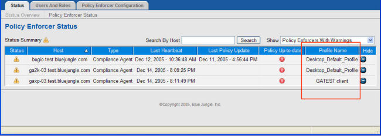

Is there an enforcer profile problem?
If you determine that the policy has not been deployed to your enforcer, one possible cause is an enforcer profile problem. ICENet servers are the gateways for distributing policies to all enforcers, and each enforcer must be configured to the proper ICENet server--one that is part of the Control Center where you are defining policies for that enforcer. If it is connected to the wrong ICENet server, the Control Center cannot distribute policies to it.
This connection is controlled by the enforcer profile associated with your enfocer host. To check that the host is using the correct enforcer profile,
- In Administrator, click the Status tab, then the Policy Enforcer Status link.
- Set the Show filter to All Policy Enforcers, and check the Profile Name column for the enforcer you are troubleshooting.
